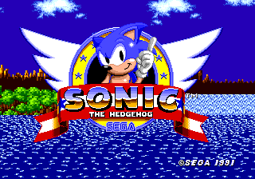
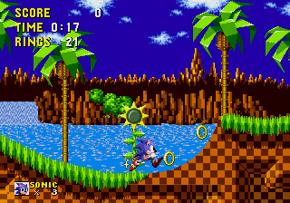
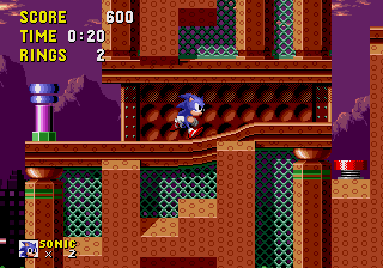
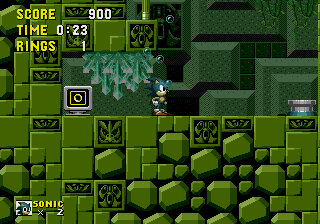
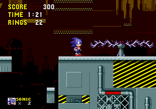
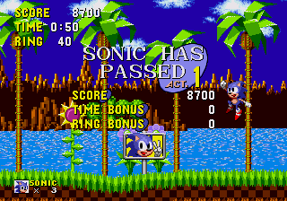

Sonic The Hedgehog (1991)
Sonic the Hedgehog é o primeiro jogo da franquia. Lançado pela primeira vez nos Estados Unidos e na Europa em 23 de junho de 1991, foi a estreia do personagem Sonic the Hedgehog e do grupo por trás de sua criação, Sonic Team. Embora o jogo tenha obtido apenas um sucesso mediano em seu país de origem, quase da noite para o dia Sonic se tornou uma sensação no Ocidente, solidificando o lugar da Sega na Europa e transformando a empresa em um nome familiar nos Estados Unidos.
Nessa página, iremos abordar algumas curiosidades do desenvolvimento, como fases e alguns dos protótipos descobertos.
Fases
Green Hill Zone
- Em uma entrevista com Yuji Naka, programador da série, ele afirma que a Green Hill Zone foi a fase que mais levou tempo de produção até ser finalizada, levando pouco mais de seis meses. Segundo ele, o objetivo era criar um cenário com visuais mais agradáveis e belos para os padrões da época, com isso, a Green Hill zone sofreu cinco alterações completas no seu visual.
- Quando Sonic Mega Collection estava sendo desenvolvido para Nintendo GameCube, Yuji Naka planejava presentear os fãs com a versão da Green Hill Zone apresentada na Tokyo Game Show de 1990, porém, o cartucho que continha os dados da fase foi roubado.
- Por algum motivo, o efeito parallax nas nuvens da fase são mais rápidos na versão japonesa
Marble Zone

- Na parte em que o jogador precisa fugir da lava no corredor, há um bug onde um dos espinho que não causa dano ao Sonic, porém, ele é empurrado para o teto, e, caso o jogador tenha anéis, o Sonic será empurrado para os lados.
- A princípio, a Marble Zone seria a terceira fase, enquanto a Labyrinth Zone seria a segunda. Entretanto, os desenvolvedores decidiram alterar a ordem porrque viram que o nível de dificuldade da Labyrinth Zone era bem mais alto, pois queriam que a dificuldade fosse progressiva.
Sring Yard Zone
- Por mais estranho que pareça, essa fase foi a primeira a ser idealizada, e também a primeira a ser finalizada.
- A música tema dessa fase é uma homenagem a música “Lovin' You 'Sawako'" do guitarrista japonês Toshiki Kodomatsu.
- A fase 4-1 da GameLand de Sonic Colors é baseada no primeiro ato da Spring Yard Zone.
Labyrinth Zone
- Na versão original do Mega Drive de Sonic the Hedgehog, se o jogador girar ao chegar ao final do ato 2 da Labyrinth Zone, a tela irá congelar e o jogador terá que reiniciar o jogo.
- O ato 5-1 do GameLand em Sonic Colors parece ser baseado no layout de nível Labyrinth Zone.
- Essa fase apareceu no primeiro protótipo de Nick Arcade de Sonic the Hedgehog 2, embora com seus dados parcialmente sobrescritos. Eventualmente, ela foi transformada na Oil Ocean Zone.
- A fase Lost Labyrinth de Sonic 4 Episode I é inspirada nessa fase. Muitos fãs acreditam que esse seja o mesmo local, só que em outra época.
- Gigalopolis Zone, uma fase de Sonic Chaos, tem algumas semelhanças com a Star Light Zone, mas com revestimento de metal azul em vez de verde. Uma vez que ambas as zonas estão localizadas na Ilha do Sul, é razoável supor que elas possam ser geograficamente adjacentes.
- Essa é a única fase que apresenta cenários tanto em primeiro plano quanto em segundo plano.
- A música tema da Star Light Zone aparece como música desbloqueável em Sonic Generations.
Scrap Brain Zone
- A Scrap Brain Zone é a única fase que não dá ao jogador a oportunidade de teletransportar para o Special Stage, mesmo se ele tiver anéis suficientes. Isso ocorre porque parte da VRAM utilizada pelo Giant Ring é usada para os efeitos de fumaça animada no fundo.
- Essa também é a única fase a ter um fundo diferente para cada ato, visto que as outras zonas utilzam o mesmo fundo em todos os atos.
- O ato 3 da Scrap Brain Zone é o único que não mostra uma pontuação ao terminar a fase.
Modificações
Logotipo da SEGA
Em vez do conhecido "Sega!" logotipo e canto icônico, este protótipo usa o logotipo padrão (e silencioso) da Sega que abre a maioria dos outros jogos do Genesis / Mega Drive. Ao contrário do jogo final, o logotipo pode ser ignorado com o botão Start.
Comemoração
Durante grande parte do desenvolvimento do jogo, o jogador não conseguia movimentar o Sonic no final de um ato (de maneira semelhante, mas não idêntica, ao comportamento das versões de 8 bits). Em vez disso, Sonic saltaria no ar com o braço levantado se o jogador saltasse depois de completar a fase.
Level Select
Em algumas das builds do game, o level select e o debug mode são ativados automaticamente para fins de teste e visualização.
- O level select contém alguns "X" ao lado da Star Light Zone e Clock Work Zone Act 3. Eles provavelmente foram usados quando uma fase não foi implementada (embora nessa build esteja um pouco desatualizado, já que Star Light Zone foi implementada).
- O ato 3 da Clock Work não pode ser selecionado, provavelmente por não haver nada nesse ato.
Protótipos
Esfera giratória (Green Hill Zone)
Green Hill Zone, presente desde o início do desenvolvimento do jogo, é a fase mais polida de todo o protótipo, e a única que termina com uma batalha de chefe. No entanto, ainda está muito longe do que acabou sendo lançado, em grande parte porque está repleto de bolas gigantes de destruição. (Eles estão em todos os três Atos!)
- Essa build contém a famigerada esfera rolante vista em várias fontes de pré-lançamento. A listagem para isso ainda permanece no jogo final, mas tentar colocá-la não adianta nada devido ao código ser excluído. Parte do sprite da bola é usada na primeira batalha contra o Dr. Robotnik no jogo final.
- O fundo tem uma ordem de chunks diferente, o que significa que a cachoeira aparece em um local diferente.
- Os girassóis nessa build tem a cor do centro magenta em vez de verde. Este esquema de cores ainda aparece no final, sugerindo que foi alterado no final do desenvolvimento
OVNIs? (Marble Zone)
Como a única outra fase nesse protótipo (junto com Green Hill Zone) com três atos completos, Marble Zone está em um estado principalmente funcional, já que esta versão da Marble é consideravelmente mais difícil do que o que acabou se tornando.
- Durante todos os três atos são visto OVNIs girando no céu, como visto em uma grande cobertura de pré-lançamento da Marble Zone. Os OVNIs não combinam muito bem com o resto do céu, o que possivelmente explica porque eles acabaram sendo removidos.
- Em Sonic Mania, gráficos semelhantes foram usados para os postes de luz na Studiopolis Zone.
- Yadorins são colocados perto de onde Caterkillers estão no jogo final. (Inimigos).
Good Luck! (Sparkling Zone)
Sparkling Zone, sendo uma versão inicial de Spring Yard Zone, tem diferenças massivas em relação ao final além do nome, sendo as mais notáveis as diferenças gráficas.
- O plano de fundo é completamente diferente do final, com o céu estrelado à meia-noite em vez de nuvens. Não há muito na forma de profundidade e escala vista no fundo em comparação com o final, já que não há colinas ou montanhas distantes para serem vistas, e há grandes edifícios com vários sinais decorativos como a Casino Night Zone de Sonic 3.
- A área dos bumbers perto do início contém um bumper com espinhos giratórios que não estão no jogo final.
Fase de água sem água (Labyrinth Zone)
Labyrinth Zone é mais incompleta das três fases anteriores, faltando muitas coisas e nem mesmo sendo jogável normalmente (o jogo pula de Sparkling Act 1 para Star Light). Como resultado, Labyrinth Zone só pode ser jogado por meio do level select.
- Um fundo completamente diferente está em uso neste ponto que, estranhamente, muda a posição Y com cada ato. Por algum motivo, o ato 3 não possui nenhum fundo.
- Todos os três atos não possuem de qualquer layout de água ou objeto, incluindo as placas que permitem o jogador finalizar a fase. Isso os torna impossíveis de serem concluídos; até a exploração é difícil sem usar o debug mode.
- Os cristais tem um design diferente e menor. Curiosamente, a versão de 8 bits do game usa esses em vez dos cristais maiores vistos no jogo final.
Em construção (Star Light Zone)
Star Light Zone, embora graficamente semelhante à sua versão final, tem o level design muito inacabado. Mesmo o ato 1 que está bem imcompleto, como evidenciado por partes em que você pode atravessar o chão.
- A fase como um todo tem um aspecto muito mais "em construção" do que o final. Este visual tem uma semelhança impressionante com a Sky Base Zone da versão de 8 bits, aumentando ainda mais a noção de que os tilesets da versão de 8 bits foram baseados no que foi planejado para aparecer na versão de 16 bits.
- Enquanto todos os três atos começam mais ou menos semelhantes às suas versões finais, o design dos níveis é drasticamente diferente. Entre as maiores diferenças em relação à versão final estão várias pequenas plataformas agrupadas, menos loops e caminhos sinuosos e mais oportunidades de cair em poços sem fundo, um exemplo disso é de poder cair da fase no ato 1 meros segundos após iniciar o nível, o que é impossível no jogo final.
- Não há inimigos nas fases do protótipo, embora os canhões que atiram bolas de fogo tenham sido implementados. Alguns dos inimigos podem ser colocados com o debug mode, embora não sejam usados no final.
Torre do Relógio (Scrap Brain Zone)
Clock Work Zone, sendo o primeiro nome da Scrap Brain Zone, é uma versão bastante imcompleta e precária dessa fase. A fase não pode ser acessada por meios normais sem usar o level select (como a Labyrinth Zone), não possui nenhum objeto e nem mesmo tem um terceiro ato, o que torna muito incompleto em comparação com sua versão final.
- Clock Work é exibido como "CLOCK ORK" no cartão de título devido a não haver um W nos sprites do cartão de título. O jogo nem tenta carregar um W, mas reserva espaço para um.
- O segundo ato, ainda mais inacabado do que o ato anterior, a ponto de não ter nenhum fundo implementado ainda. Você mal pode ir a qualquer lugar sem usar o debug mode, e o layout é muito bugado em muitos lugares.
- O terceiro ato simplesmente não existe! Quando o jogador acessa o ato usando level select, o Sonic apenas cai infinitamente no cenário, e só pode interagir utilizando o debug mode.